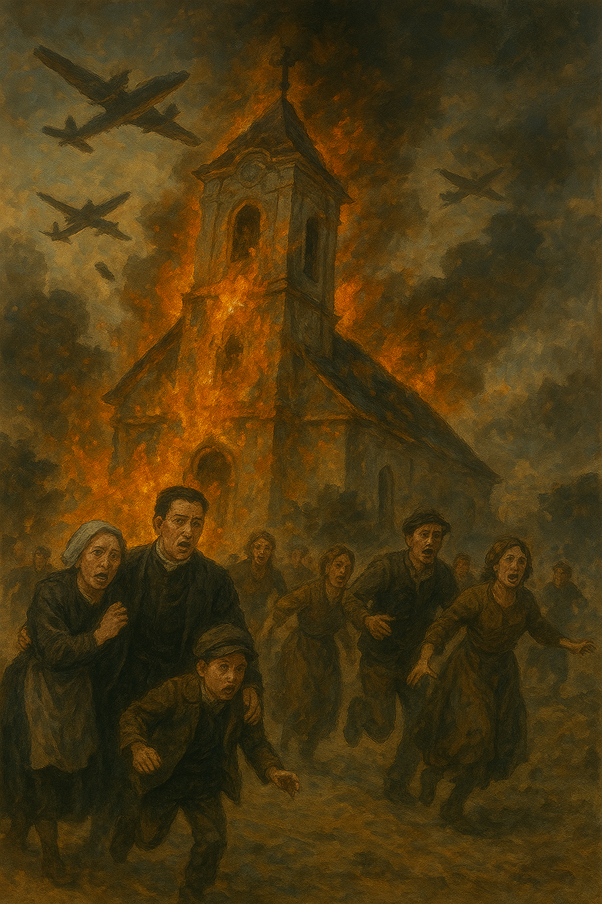

Prechádzajte sa s nami po stopách histórie. Každé miesto skrýva príbeh, každý kameň si veľa pamätá...
História kalvínov
Od 60.rokov 17.storočia začala v Moldave nastupovať rekatolizácia, ktorá v okolí nadobudla radikálnu podobu vďaka jezuitsského pátrovy Hyrkovi.
Obr. 1 Kostol reformovanej cirkvi na začiatku 20,storočia (pohľadnica)
Moldavský kostol, fary a škola sa striedali v rukách katolíkov a kalvínov. Dekrétom v roku 1688 bol vrátení katolíkom ale o 16 rokov neskôr sa dostal opäť do rúk kalvínov. Snahy kalvínov definitívne zmrazilo ukončenie protihabsburských postavení. Prijatím Satmárskeho mieru v roku 1711 sa kalvínsky chrám, vrátil katolíkom a kalvínom sa už nikdy nepodarilo získať chrám späť. Základy chrámu boli položené na rovnokom mieste ako stojí dnešných.
Nová éra kalvínov
Novým miesto bohoslužieb a útočiskom kalvínov v moldave sa stal improvizovaný drevený kostol na strom cintoríne(blízko dnešnej Kalvínskej ulice a starej autobusovej stanice).
Obr. 2 Pohľad na kostol v roku 1930 (pohľadnica)
Ich postavenie sa začalo zlepšovať od polovice 18.storočia.V roku 1753 sa kalvínom podarilo dostať povolenie na výstavbu vlastnej fary o 20 rokov neskôr sa im podarilo stavbu dokončiť čím získali svoj dôstojný chrám. Základy chrámu boli umiestnené na rovnakom mieste ako stojí dnešný chrám. Prostriedkami na výstavbu chrámu prispelo mesto, cechy a veriaci. Neskôr k kostolu bola dostavaná drevená kostolná veža.
Prestavba Kostola
Po prijatí Tolerančného patentu Moldavský kalvíni požiadali o výstavbu murovanej kostolnej veže. Rožňavský kamenársky majster, ktorí bol najatý na vystavbu kostolnej veže, dokončil prirýchlo, čo viedlo k zruteniu kostolnej veži a časti kostolného múru na Vianoce v roku 1784. S opravami a výstavbou začali nasledujúci rok. Dokončené boli v roku 1789, v tom období, keď refomovaný kostol ohradili s múrom a dvomi klasicistickými portálmi.
Obr. 3 Budova Kostola počas 1.svetovej vojny
Veľkému požiaru mesta sa nevyhol ani kostol reformovanej cirkvi, ktorý ho úplne spustošil. Neskôr sa na ňom podpísali ďalšie požiare a vojny, v dôsledku ktorej zanikli niektoré pôvodné prvky kostola
Obr. 4 Kostol počas 2.svetovej vojny
Kostol reformovanej cirkvi očami umelej inteligencie
Vypočujte si pieseň o kostole reformovanej cirkvi v moldave :
Zdroj: vytvorené pomocou AI nástroja https://suno.com/
Pozrite si náučné video o našej synagóge:
Zdroj: tím GŠM 7, zvuk vytvorený pomocou AI nástroja v programe
Ilustratívny obrázok kostola počas vojny a požiarov :

Zdroj: vytvorené pomocou AI nástroja https://chatgpt.com/
Zdroje
DANKO, Dalibor. Moldava nad Bodvou na starých pohľadniciach. Premeny mesta do prvej polovice 20. storočia. Moldava nad Bodvou : Mestské kultúrne stredisko v Moldave nad Bodvou, 2023, s. 96 - 98.
KOVÁCS, Béla. A szepsii ev. ref. egyház története levéltári okmányok s az egyházi feljegyzések alapján. Sárospatak: Szepsii ev. ref. egyház, 1896, 93 s.
sp = Súpis pamiatok na Slovensku. II. zv. Bratislava: Obzor, 1968, s. 336.
Obrazový materiál
Obr. 1, Obr. 2 - pohľadnice zdroj: zo zbierky D. Danka